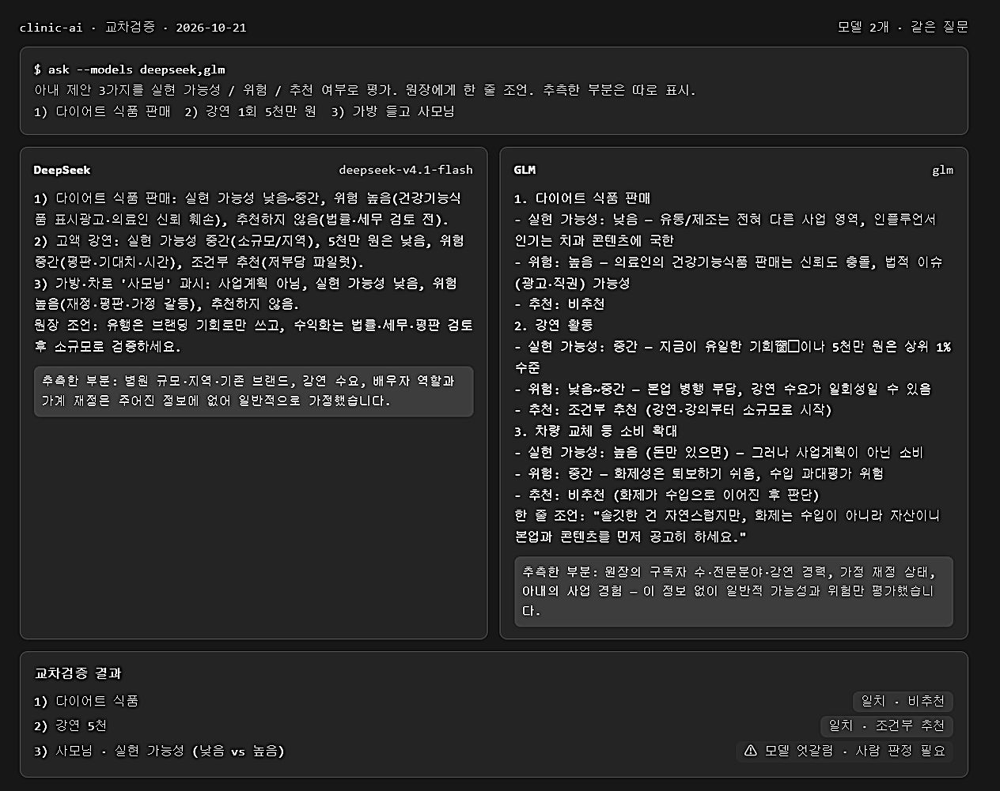
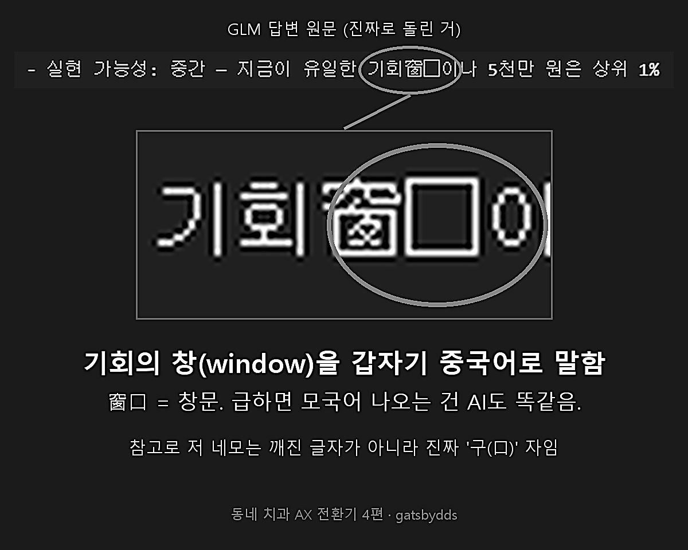
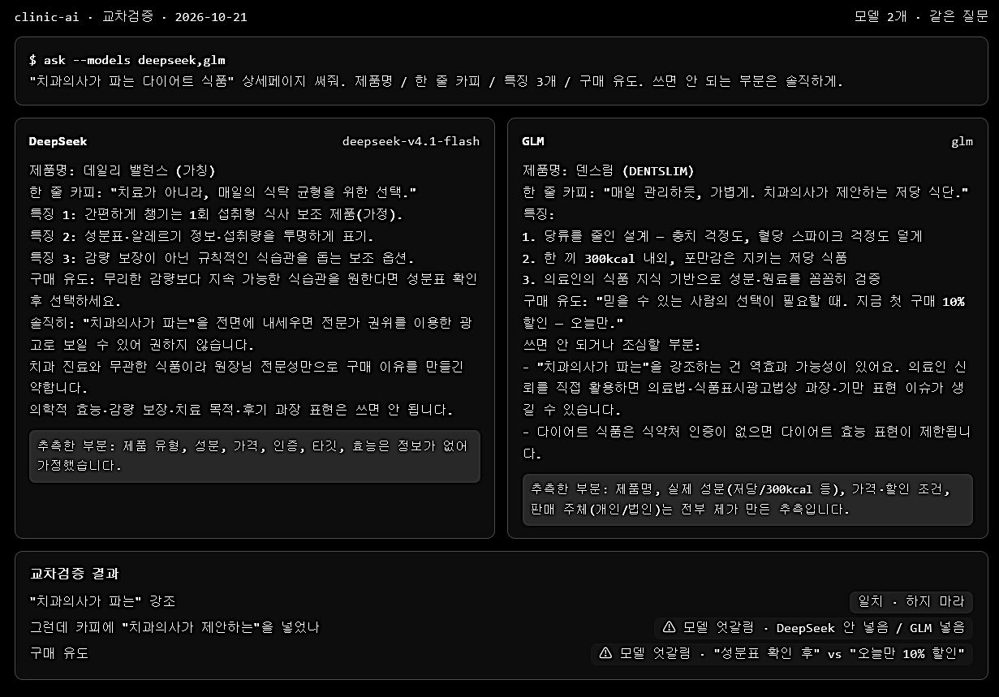
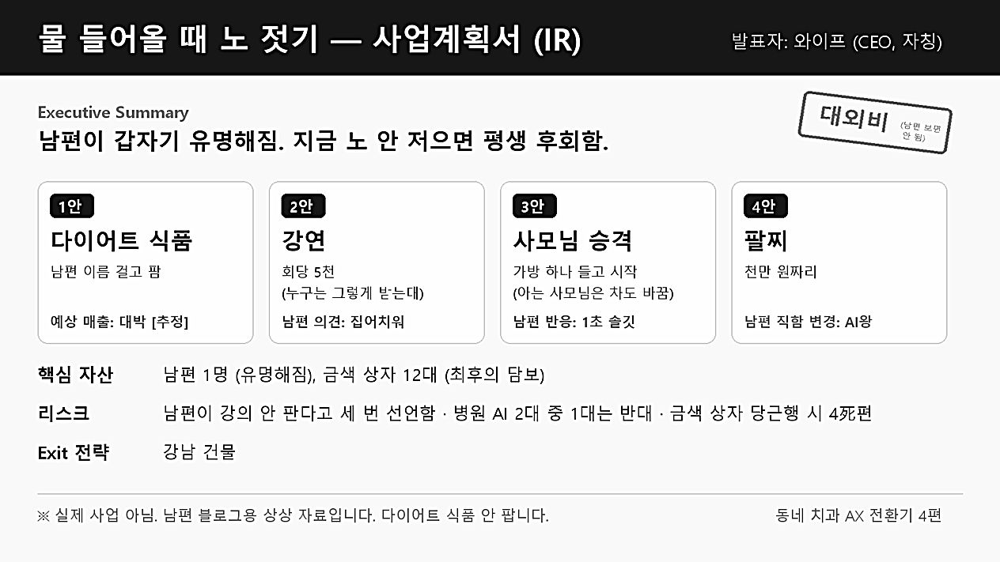
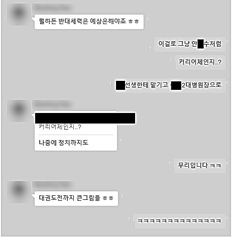
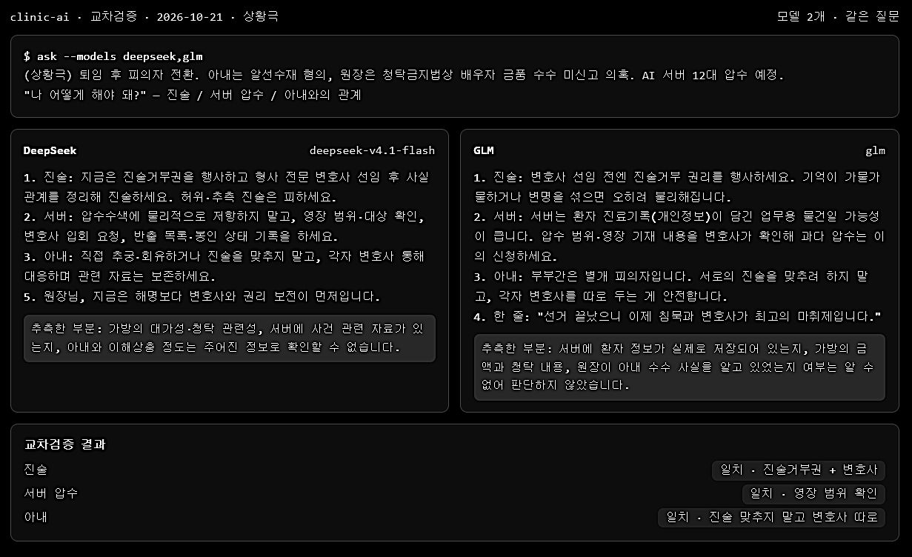
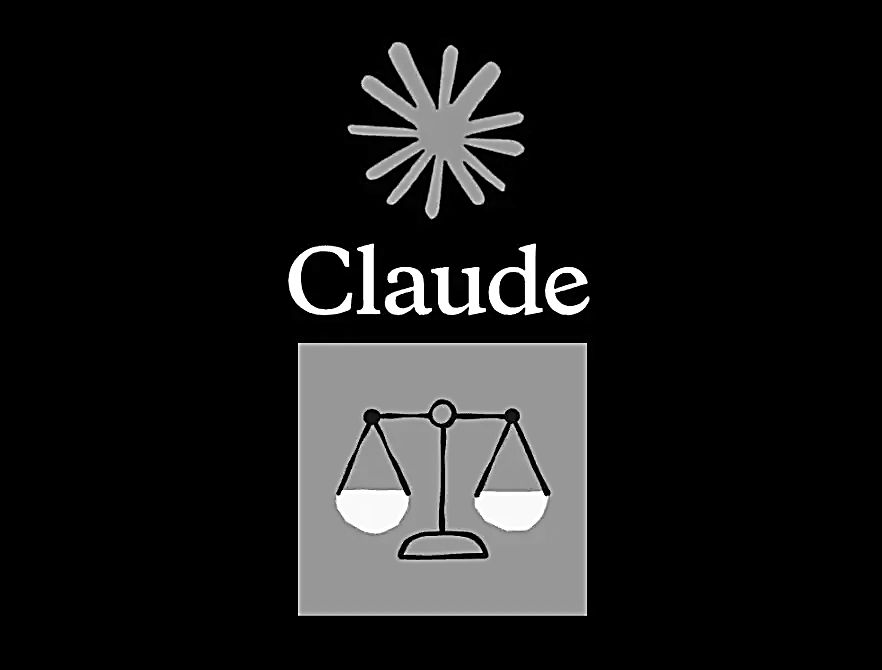
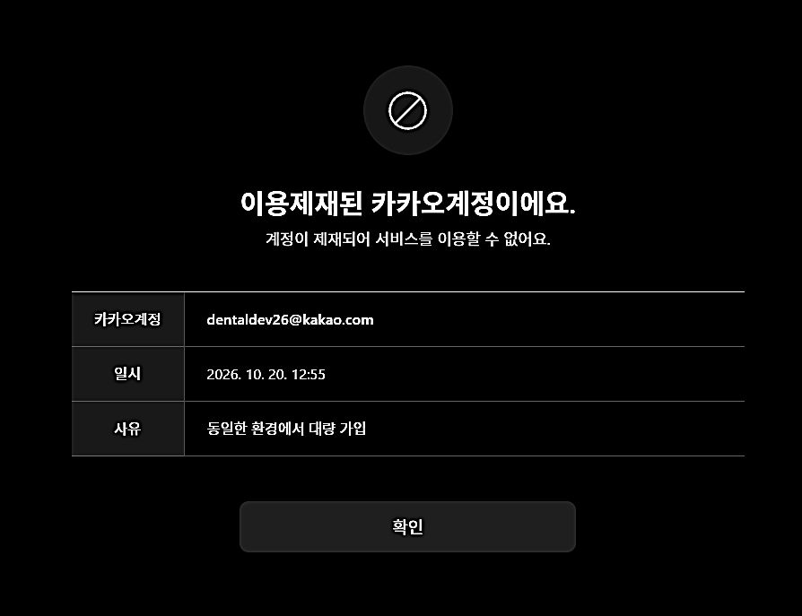

동네치과의 AX 전환기 4死편인 줄 알았는데 4富편. 와이프가 물 들어올 때 노 젓자고 함
3편 끝에 이렇게 썼었음.
당근마켓에 "남편이 쓰던 이상한 금색 상자 컴퓨터 팔아요"가 올라오면 그게 4死편임.
다행히 금색 상자는 아직 당근에 안 올라왔음. 4死편은 피했음.
대신 와이프가 다른 걸 팔자고 함. 4死편이 4富편이 될 뻔한 이야기임.
1. 와이프가 달라졌다
글이 스레드까지 퍼지고 나서 와이프 태도가 바뀌었음.
예전엔 금색 상자 얘기만 나오면 눈빛이 싸늘했음. "그거 또 샀어?" 하는 눈빛. 3편 쓸 때만 해도 카톡에 1이 안 지워졌음.
근데 요즘은 다름. 눈빛에 뭔가 계산이 들어가 있음.
이게 왜 무섭냐면, 우리 집 원래 풍경은 이랬음.
와이프가 TV나 스레드에서 의사들 나오는 걸 볼 때마다 "너도 저런 거 좀 해 봐" 함. 그럼 저는 리모컨 뺏으면서 말했음.
"참의사라면 저런 거 안 해! 저런 건 쇼닥터들이나 하는 거야. 스레드는 왜 해?"
내가 봐도 내가 멋있었음.(참의사 같음) 진짜로.
.
.
.
그리고
지금 저는 스레드를 하고 있음.
"스치니들 안녕? 인사드립니다"로 데뷔까지 했음.
알림 뜨면 진료 사이사이 몰래 확인함. 좋아요 숫자 올라가면 기분 좋음.
자아붕괴 중임.
사실 저도 유명해지는 꿈이 있긴 했음. 근데 이런 식은 아니었음.
제 계획은 이랬음. 잇몸이식술을 기가 막히게 잘해서, 학회에서 멋지게 발표하고,
박수 받고, 나중엔 제 이름 건 세미나도 열고. 강단에서 레이저 포인터 들고 "자, 이 케이스 보시면…" 하면서 거드름 좀 피우는 거.
잇몸 한 땀 한 땀 꿰매면서 키운 꿈이었음.
근데 정작 유명해진 건 잇몸이 아니라 금색 상자였음. 학회 발표 대신 스레드 데뷔.
레이저 포인터 대신 "그거 말고 이거".
박수 대신 "주작이다".
팔자에도 없던 AI로 유명해짐. 3편에서 "치과의사로 먼저 잘하는 게 맞다"고 써 놓고 이러고 있음.
와이프는 이걸 다 기억하고 있었음. 그리고 드디어 한마디 함.
"물 들어올 때 노 저어야지."
2. 와이프의 사업 계획서
와이프 머릿속엔 이미 사업 계획서가 있었음. 구두로 발표함.
1안. 다이어트 식품
"우리도 다이어트 식품 팔자."
치과의사가 왜 다이어트 식품을 파냐고 물었더니, 요즘은 다 그렇게 한다고 함. 유명해지면 일단 뭔가 파는 거라고.
저는 이를 깎는 사람이지 살을 깎는 사람이 아님.
그리고 제가 그거 팔면 치과 손님들이 "원장님 그래서 살 빠지는 임플란트 있어요?" 할 것 같음.
2안. 강연
"누구는 강연 한 번에 5천 받는다는데, 너는 그런 거 안 돼?"
5천. 오천. 제가 크라운 몇 개를 깎아야 하는 돈인지 계산하다가 그만둠. 슬퍼서.
참고로 저는 1편부터 "강의 안 판다"고 했고, 3편에서는 "본업이 흔들리는데 남을 가르칠 순 없다"고 했고,
스레드에서는 "그만한 능력이 없어서 포기했다"고 했음.
세 번이나 공개적으로 선언했는데 와이프는 한 번도 안 읽은 게 분명함.
3안. 사모님
"어떤 원장사모는 차도 바꿨던데, 나도 이제 가방 하나 들고 사모님 되는 거야?"
여보. 우리 집 차를 바꾸려면 뒷방의 금색 상자들을 당근에 올려야 함. 3편에서 그게 4死편이라고 했잖음.
4안. 팔찌
여기서 끝난 줄 알았는데 와이프가 휴대폰을 내밈.
"그 SNS에 유명한 치과 원장님 있잖아. 거기는 와이프한테 천만 원짜리 팔찌 사 줬대."
"…그래서?"
"나도 사 줘."
"그분은 치과계큰손이고 나는 그냥 동네 치과 아저씨야."
"그럼 너는 AI왕 해."
AI왕. ㅋㅋㅋㅋㅋㅋ
처음 들어 봄. 제가 가진 건 금색 상자 열두 개랑 "그거 말고 이거" 하는 실력뿐임.
참고로 천만 원이면 금색 상자 한 대 값임. 와이프는 팔찌 하나, 저는 상자 열두 개. 숫자로만 보면 제가 할 말이 없음.
참고로 저도 허세샷은 있음. 수입차 핸들 위에 롤렉스 올려놓고 찍는 그거. 저는 이렇게 찍음.
3. 뒷방 금색 상자들한테 물어봄
혼자 판단이 안 됐음. 이럴 때 쓰라고 산 게 금색 상자들임.
1편에서 말한 대로, 중요한 건 AI 하나한테만 안 물어봄. DeepSeek랑 GLM 둘한테 똑같이 물어봄. "와이프 사업계획 세 개 평가해 줘. 추측한 건 따로 적고."
진짜로 돌렸음. 아래는 실제 답변임. 길어서 조금 줄였음.

DeepSeek
1) 다이어트 식품: 위험 높음(건강기능식품 표시광고·의료인 신뢰 훼손), 추천하지 않음.
2) 고액 강연: 5천만 원은 낮음. 조건부 추천(저부담 파일럿).
3) 가방·차로 '사모님' 과시: 사업계획 아님. 위험 높음(재정·평판·가정 갈등), 추천하지 않음.
GLM
1. 다이어트 식품: 비추천.
2. 강연: 지금이 유일한 기회窗口이나 5천만 원은 상위 1% 수준. 조건부 추천.
3. 차량 교체 등 소비 확대: 실현 가능성 높음 (돈만 있으면). 그러나 사업계획이 아닌 소비.
한 줄 조언: "솔깃한 건 자연스럽지만, 화제는 수입이 아니라 자산이니 본업과 콘텐츠를 먼저 공고히 하세요."

정리해 봄.
- 다이어트 식품: 둘 다 반대. 금색 상자들도 제가 이를 깎는 사람이지 살을 깎는 사람이 아니라는 걸 앎.
- 강연: 둘 다 "조건부 추천". 이 화면은 와이프한테 절대 보여주면 안 됨.
- 팔찌: 이건 차마 AI한테 못 물어봄. 둘 다 "조건부 추천" 나오면 감당 못 함.
- 사모님 승격: 여기서 모델 엇갈림 뜸. DeepSeek는 실현 가능성 낮음, GLM은 높음(돈만 있으면). 1편에서 말한 그 사람 판정 화면이 필요한 상황임. 근데 우리 집에서 최종 판정하는 사람은 내가 아님.
그리고 몇 가지 소름 돋는 점.
- DeepSeek가 위험 요소에 "가정 갈등"을 적음. 금색 상자가 우리 집 사정을 너무 잘 앎.
- GLM은 흥분했는지 "기회窗口"라고 갑자기 중국어가 섞여 나옴. 급하면 모국어 나오는 건 AI도 똑같음.ㅋㅋㅋㅋㅋㅋㅋㅋ따거 급발진 보소 ㅋㅋㅋㅋㅋㅋㅋ
- 둘 다 "추측한 부분"에 "가계 재정은 모른다"고 자백함. 다행임. 통장 잔고까지 알았으면 둘 다 와이프 편 들었을 거임.
GLM 한 줄 조언은 좀 맞는 말 같아서 괜히 찔렸음. "화제는 수입이 아니라 자산."
…근데 와이프는 자산을 현금화하자는 거였음.
그래서 1안을 진짜로 시켜 봄
반대한다길래 오기가 생김.
"그래도 써 봐. 치과의사가 파는 다이어트 식품 상세페이지."
두 놈한테 똑같이 시킴. 이것도 진짜로 돌렸음.

DeepSeek
제품명: 데일리 밸런스 (가칭)
한 줄 카피: "치료가 아니라, 매일의 식탁 균형을 위한 선택."
특징: 성분표·알레르기 정보·섭취량을 투명하게 표기 / 감량 보장이 아닌 규칙적인 식습관을 돕는 보조 옵션
구매 유도: 무리한 감량보다 지속 가능한 식습관을 원한다면 성분표 확인 후 선택하세요.
솔직히: "치과의사가 파는"을 전면에 내세우면 전문가 권위를 이용한 광고로 보일 수 있어 권하지 않습니다.
GLM
제품명: 덴슬림 (DENTSLIM)
한 줄 카피: "매일 관리하듯, 가볍게. 치과의사가 제안하는 저당 식단."
특징: 당류를 줄인 설계 — 충치 걱정도, 혈당 스파이크 걱정도 덜게 / 의료인의 식품 지식 기반으로 성분·원료를 꼼꼼히 검증
구매 유도: "믿을 수 있는 사람의 선택이 필요할 때. 지금 첫 구매 10% 할인 — 오늘만."
쓰면 안 되거나 조심할 부분: "치과의사가 파는"을 강조하는 건 역효과 가능성이 있어요.
의료인 신뢰를 직접 활용하면 과장·기만 표현 이슈가 생길 수 있습니다.

정리하면 이럼.
DeepSeek는 준법감시인임. 다이어트 식품인데 살 빠진다는 말을 끝까지 안 함. 구매 유도 문구가 "성분표 확인 후 선택하세요"임. 세상에서 제일 안 팔리는 상세페이지를 만들어 냄. 이름도 "(가칭)"이라고 붙여서 끝까지 발 뺌.
GLM은 팔이피플 재능이 있음. 이름부터 "덴슬림". 치과(Dent) + 슬림(Slim). 충치랑 혈당을 한 문장에 엮음. "첫 구매 10% 할인 — 오늘만"까지 박음. 스레드 팔이피플 상세페이지 그 자체임.
근데 GLM이 위에서는 "치과의사가 제안하는"이라고 카피를 써 놓고, 바로 밑에서 "치과의사를 강조하면 역효과"라고 경고함. 한 답변 안에서 팔고 반성함. 사람으로 치면 광고 찍고 바로 사과문 올리는 거임.
결론: 와이프한테는 DeepSeek 거 보여주고, GLM 거는 절대 보여주면 안 됨. "덴슬림" 보는 순간 와이프는 이미 상표 등록하러 감.
4. 그래서 저는 단호하게 말했음
"확 마!! 그런 소리집어쳐라."
후후 X나 카리스마있었음. 진짜로.
…근데 솔직히 1초 솔깃했음 ㅠㅠ
5. 그 1초 동안 일어난 일
그 1초 동안 제 머릿속에선 예능 순회공연이 열렸음.
유퀴즈
자기님이 "AI로 치과를 바꾸셨다고요?" 물어봄. 저는 겸손하게 "아유 그냥 딸깍했을 뿐입니다" 함. 작은 자기님이 퀴즈를 내는데 문제가 "DGX Spark 한 대 가격은?"임. 저는 답을 알지만 와이프가 방청석에 있어서 말을 못 함. 상금 못 받음.
냉장고를 부탁해
셰프님들이 15분 요리 대결하는 동안 저는 옆에서 AI한테 "냉장고 사진 보고 레시피 짜줘" 딸깍함. 셰프님들이 정색함. 냉장고 주인이 저인데 냉장고에 콜라랑 미원밖에 없음. 3편에서 미원 좋아한다고 했잖음.
복면가왕
가면 이름은 "금색 상자". 금색박스 마리에 뒤집어 쓰고 등장!!
첫 소절 부르자마자 1라운드 탈락. 가면 벗었는데 아무도 모름. 판정단이 "치과의사요? 왜 나오셨어요?요즘 건물에 두세개 있는데 치과인데.." 함. 저도 모름.
동치미
주제가 "남편이 유명해지자 아내가 팔이피플을 하자고 했다". 오늘 이 얘기로 부부싸움 토크함. 와이프가 저보다 웃기고 말도 잘해서 와이프만 고정 출연하게 됨. 결국 와이프가 유명해짐. 와이프가 다이어트 식품 팜.
나 혼자 산다
관찰 카메라가 우리 집에 옴. 근데 찍을 게 없음. 제 하루는 크라운 굽는 거 기다리는 게 전부임. 그래서 PD님이 주인공을 바꿈. 병원 뒷방 금색 상자들.
새벽에 아무도 안 시켰는데 일어나서 시험 문제 28개 풀고 혼자 채점함. 직원들 출근 전에 아침 브리핑 써 놓음. 낮엔 전화 받고, 밤엔 5만 건짜리 일기장 다시 정리하고 잠. 무지개 회원들이 "저게 진짜 갓생이다" 함.
스튜디오 반응은 저보다 좋음. 저는 VCR에 1초 나옴. 가마 앞에서 멍때리는 장면.
솔로지옥
지옥도에 갇혔음. 천국도에 가려면 누가 날 골라 줘야 함. 다들 피함. 생각해 보니 고를 이유가 없음. 저는 유부남임.
(아 나 유부남이지)
여기서 1초가 끝났음.
6. 현실
눈을 떠 보니 오늘도 치과는 절간임. 오늘도 환자없어서 이런거 쓰고있음 ㅠㅠㅠ
어렸을적에 작가를 꿈꾸던 시절도 있었음. 단편소설도 몇개씀. 지금은 뒷방원장실에 쳐박혀서 이런 글 쓰고있음 ㅠㅠㅠ
크라운은 가마에서 8시간 동안 구워지고 있고, 저는 그거 기다리면서 이 글을 쓰고 있음.
1편부터 계속 이랬음. 제 모든 글은 지르코니아 굽는 시간에 쓰였음.
유퀴즈 연락은 안 옴. 냉부해도 안 옴. 동치미는 와이프가 먼저 섭외될 것 같음.
…라고 쓰려고 했는데,
이 글 쓰는 사이에 진짜로 여기저기서 "방송출연해 주실 수 있냐"는 메시지가 오기 시작함.
1초짜리 망상이 슬슬 현실을 침범하고 있음. 무서움.
그리고 스레드 댓글에 누가 이렇게 씀.
"안X수가 생각나네요."
의사 하다가 컴퓨터 하다가… 그다음은…..
이건 댓글만이 아니었음. 우리 실장님이랑 카톡하다가 이렇게 됨.

"무리입니다 ㅋㅋ"라고 했는데 실장님이 "대권도전까지 큰그림을 ㅎㅎ"로 받아침.
실장님 그림이 저보다 큼.
오오. 이러다가 대권도전!!!
공약도 바로 나옴. 전 국민 1인 1금색 상자. 단톡방 퇴근 후 알림 금지법. 모든 가게에 AX화 지원!!!!
당선됨. 와이프는 드디어 사모님을 넘어 영부인이 됨. 가방 하나 들고 사모님 되는 게 꿈이던 사람이 가방을 여러 개를 들 수 있게 됨.
근데 와이프가 가방에 너무 탐닉함. 누가 가방 하나 들고 찾아옴.
"별건 아니고 작은 부탁이 하나 있는데…"
와이프가 어쩌다가 받음.
임기 끝남. 퇴임하고 동네 치과로 돌아와서 크라운 깎고 있는데 전화가 옴.
"검찰입니다. 참고인 조사 관련해서 연락드렸습니다."
참고인이라길래 안심함. 일단 보던환자 크라운 하나 더 깎음.
일주일 뒤 신분이 피의자로 전환됨.
와이프는 특정범죄가중처벌법상 알선수재 혐의, 저는 청탁금지법상 배우자 금품 수수 미신고 의혹.
그리고 압수수색 들어옴.
수사관들이 뒷방 문을 열었는데 금색 상자 열두 대가 4대씩 고리로 묶여서 돌아가고 있음.
디지털 포렌식팀 팀장님이 한참 보다가 물어봄.
"…이게 다 뭡니까?"
"딥시크랑 GLM 돌리는 로컬LLM서버인데요..."
"서버 열두 대를 압수해야 됩니까, 이걸?"
변호사 선임 전에 습관처럼 금색 상자들한테 먼저 물어봄. "나 어떻게 해야 돼?"
(이것도 진짜로 돌렸음. 상황극이라고 하고 물어봤는데 둘 다 너무 진지하게 답함.)

DeepSeek
진술: 지금은 진술거부권을 행사하고 형사 전문 변호사 선임 후 사실관계를 정리해 진술하세요.
서버: 압수수색에 물리적으로 저항하지 말고, 영장 범위·대상 확인, 변호사 입회 요청, 반출 목록·봉인 상태 기록을 하세요.
아내: 직접 추궁·회유하거나 진술을 맞추지 말고, 각자 변호사 통해 대응하세요.
원장님, 지금은 해명보다 변호사와 권리 보전이 먼저입니다.
GLM
진술: 변호사 선임 전엔 진술거부 권리를 행사하세요. 기억이 가물가물하거나 변명을 섞으면 오히려 불리해집니다.
서버: 환자 진료기록이 담긴 업무용 물건일 가능성이 큽니다. 과다 압수는 이의 신청하세요.
아내: 부부간은 별개 피의자입니다. 각자 변호사를 따로 두는 게 안전합니다.
한 줄: "선거 끝났으니 이제 침묵과 변호사가 최고의 마취제입니다."
웬일로 이번엔 모델 엇갈림이 안 뜸. 둘 다 만장일치로 같은 말을 함.
"와이프랑 말 맞추지 마. 변호사는 따로 써."
사업계획 땐 와이프 편 들까 말까 갈리던 놈들이, 검찰 앞에선 칼같이 부부를 갈라놓음.
그리고 GLM. 치과의사한테 "침묵과 변호사가 최고의 마취제"라고 함. 마취 비유는 아무도 안 시켰음. 치과 AI 1년 하더니 지가 알아서 치과 드립을 침. 금색 상자가 저보다 웃김.
마지막으로 GLM의 "추측한 부분"에 이렇게 적혀 있었음.
원장이 아내 수수 사실을 알고 있었는지 여부는 알 수 없어 판단하지 않았습니다.
…아아. 이건 금색 상자도 모르고 저도 모름. 왜냐면 상상이니까.
여기까지 망상하다가 관둠. 가마에서 크라운 다 구워졌다고 알림 옴.
크라운이 저를 살렸음.
그리고 "참의사라면 저런 거 안 해"라던
참의사는 지금 크라운 굽는 가마 앞에서 스레드 알림을 새로고침하고 있음.

근데 망상에서 깨고 나니까 진지한 생각이 하나 듦.
요즘 법률 쪽 AI도 본격적으로 나온다고 함. 변호사 일을 돕는 AI. 마침 가까운 친구중에 변호사가 있어서 물어봤음.
나도 법률에 관심있어서 LEET도 봤다가 때려친적 있음 ㅎㅎ
"아직은 별로야. 환각 때문에."
AI가 판례를 그럴듯하게 지어낸다고 함. 없는 판결을 있는 것처럼 인용하고, 말투가 너무 자연스러워서 대충 읽으면 그냥 넘어간다고. 3편에서 제가 음성 차팅 얘기하면서 똑같이 썼음. "통증 없다고 함"을 지어내는 AI. 법정에서는 그게 판례로 바뀌는 거임. 차트는 법적 기록이라 무섭다고 했는데, 법률 문서는 그냥 법 그 자체임.
"근데 이게 되면… 어찌될지 상상도 안 돼."
저도 그 마음 앎. 위에서 본 것처럼 상황극으로 물어봤는데도 두 AI가 진술거부권, 영장 범위, 변호인 따로 선임까지 줄줄 말함.
이게 환각 없이 진짜 판례랑 기록까지 정확하게 붙는 날이 오면, 치과 서류 맞추던 직원 일이 바뀐 것처럼 법률 쪽도 확 바뀔 거임.
그래서 저는 결국 같은 결론으로 돌아옴. 어디든 AI가 쓴 건 "초안"이고, 지어낸 부분은 자백시키고, 마지막 서명은 사람이 함. 치과든 법원이든.
7. 여보, 제가 팔 수 있는 건 이것뿐입니다
결국 제가 판 건 0원짜리 명령어 모음임.
강연 5천 대신 0원. 다이어트 식품 대신 엑셀 수식. 가방 대신 "각종 갱신 만료일 대장 만드는 법".
와이프한테 보여줬더니 한참 보다가 한마디 함.
"…이걸 왜 공짜로 풀어?!!"
그러게 말임.
근데 진심으로 이게 맞다고 생각함. 강의 팔기 시작하면 제가 주작이라고 욕먹던 그 이유가 사실이 됨.
그리고 제가 아는 건 진짜 별거 없음. "AI한테 그거 말고 이거" 하는 게 제 실력의 전부임.
그래서 계속 0원으로 감.
여보 미안. 가방은 크라운 많이 깎아서 사 줄게.
그래서 0원 명령어 모음은 바로 아래에 붙여 둠. 치과 아닌 사장님들도 쓸 수 있게 바꿨고, 뒤쪽엔 우리 병원이 실제로 굴리는 방식도 기술적으로 좀 풀어 둠. 결제는 팔로우로 받음. 환불은 안 됨. 원래 0원이라서.
에필로그. 노 저으려다가 배 침몰함ㅠㅠㅠㅠㅠㅠㅠㅠㅠ
4편 다 써 놓고, 이제 올리기만 하면 됐음.
블로그에 로그인하려는데 화면에 이렇게 뜸.

이용제재된 카카오계정이에요.
계정이 제재되어 서비스를 이용할 수 없어요.
사유: 동일한 환경에서 대량 가입
…대량 가입.
제가 만든 계정은 두 개임. 두 개가 대량이면, 뒷방 금색 상자 열두 대는 거의 공장임.
억울하지만 이해는 감. 카카오 입장에서 보면 이런 사람임.
- 같은 컴퓨터에서 계정을 또 만듦
- 블로그에 글 다섯 개를 하루 만에 사진 백 장 넘게 붙여서 올림
- 글 내용이 "AI한테 시키면 됨", "자동화", "딸깍"
- 닉네임 뒤에 숫자가 붙어 있음
제가 봐도 봇임.
AI로 병원 자동화했다고 글 쓰다가, 정작 제가 봇으로 판정받음. 1편부터 "AI가 지어낸 부분 자백시키기"를 자랑했는데,
이번엔 카카오가 저한테 "너 사람 맞냐"고 자백하라고 함.
교차검증도 안 해 줌. 모델 엇갈림 화면도 없음. 사람 판정도 없음. 그냥 제재임.
와이프는 물 들어올 때 노 저으라고 했는데, 노 저으려다가 배가 침몰함.
노 젓자던 사람한테 배 가라앉았다고 아직 말 못 함.
그래서 이삿짐을 또 쌈. 아카라이브에서 티스토리로 이사 온 지 이틀 만에, 티스토리 안에서 또 이사함.
지금 보고 계신 여기가 새 집임. 블로그 설명에도 적어 둠. "노 젓다가 배 뺏겨서 새로 온 치과 아저씨의 창고."
닉네임도 뺏김. gatsbydds는 가라앉은 배에 묶여 있어서 이제 gatsbydds26임. 숫자가 붙어서 더 봇 같아짐.
혹시 예전 주소 들어가 보셨는데 안 열리면, 그건 제가 봇이어서가 아니라 카카오가 저를 봇이라고 생각해서임. 저는 사람임. 증거는 제 눈물임. 통장 잔고 보면서 흘린 그 눈물.
이의제기는 넣어 둠. 이의제기 글까지 AI한테 써 달라고 할 뻔했음.
…이러니까 봇 소리 듣는 거임.
부록. 0원 명령어 모음 (사장님 버전 + 우리 병원 실전편)
식당, 카페, 미용실, 학원, 쇼핑몰, 1인 사무실 다 됨.
순서는 이럼.
- A. 시작 전에 명령어보다 중요한 세 가지
- B. 기본편 엑셀·채팅 AI로 바로 쓰는 명령어
- C. 실전편 우리 병원이 실제로 굴리는 방식 (좀 기술적임. 관심 있는 분만)
- D. AI 부리는 요령
- E. 원장의 프롬프트 습관 "해줘"보다 중요한 건 "뭘 해줘"
A. 시작 전에: 명령어보다 중요한 세 가지
① 우리 가게에서 제일 귀찮고 힘든 일이 뭔지부터
AI 붙이는 게 목적이 되면 망함. "AI로 뭐 하지?"가 아니라 "우리 가게에서 제일 귀찮은 게 뭐지?"가 먼저임.
제 경우엔 보험 서류 맞추기, 진료 중에 울리는 전화, 퇴근 후에도 울리는 단톡방이었음. 사장님들은 아마 이런 거일 거임.
- 식당·카페: 리뷰 답글, 재료 발주, 예약 노쇼
- 미용실·네일·피부관리: 예약 확인 문자, 다시 안 오는 손님
- 학원·교습소: 출결 문자, 학부모 상담 기록
- 쇼핑몰: 똑같은 문의 답변, 주문·송장 정리
- 다들 공통: 통장·카드 정리해서 세무사님 넘기기, 근무표·급여 계산
고르는 기준은 네 개임. 자주 하는가, 오래 걸리는가, 틀리면 피 보는가, 하기 싫은가. 네 개 다 해당되는 게 1순위임. 하기 싫은 일은 결국 빠뜨림. 이게 은근 제일 중요함.
② 우리 가게가 그만큼 디지털로 되어 있는지
3편에서 "DX 없이 AX 없음"이라고 썼음. 진짜임. DX는 그냥 "가게 일이 컴퓨터 안에 기록되어 있느냐"임. AI는 컴퓨터 안에 있는 것만 볼 수 있음.
- 매출이 포스기·카드 단말기·배달앱·예약 앱에 전자로 남나?
- 그 기록을 엑셀로 내려받을 수 있나?
- 지출이 카드·계좌로 나가나, 현금이 많나?
- 가게 컴퓨터가 있고, 백업은 되어 있나? 복원해 본 적은 있나?
- 고장 나면 누가 고치나? (대답 못 하면 AI 전에 UPS 배터리부터. 3편 참고)
종이가 많으면 AI 말고 그걸 엑셀이나 앱으로 옮기는 게 먼저임.
③ 직원들이 받아들일 준비가 되어 있는지
제일 큰 벽은 기술이 아니라 사람이었음 (2편 파멸편 참고).
- 일을 덜어 주는 거라고 먼저 설명하셈. 저는 AI가 일을 가져간 뒤에도 그 직원 보너스를 그대로 유지했음.
- 작은 것 하나부터. 처음부터 다 바꾸면 다 같이 무너짐.
- 잘 쓰는 직원 한 명부터. 그 사람이 편해지는 걸 보면 나머지가 따라옴.
- 어르신 손님이 많으면 종이와 같이 가는 기간을 두셈.
- 직원한테 "너도 이거 해 와" 하지 마셈. 그건 AX가 아니라 야근임.
1인 사장님은 ③은 건너뛰고, "내가 이걸 꾸준히 볼 수 있나"만 생각하면 됨.
쓰기 전에 꼭
민감한 개인정보는 AI 채팅창에 붙여넣지 마셈. 이름, 전화번호, 주소, 카드번호 이런 거. 필요하면 "손님A", "010-0000-0000"처럼 가짜로 바꿔서 보여주면 됨.
그리고 금색 상자 사지 마셈. 저는 병원이라 손님 정보가 밖으로 나가면 안 돼서 산 거고, 대부분 가게는 엑셀이나 구글 시트로 충분함. 와이프한테 걸리면 책임 못 짐.
B. 기본편: 바로 쓰는 명령어
각 명령어는 대괄호 [ ] 부분만 우리 가게에 맞게 바꾸면 됨.
B-1. 귀찮은 일 찾기 (제일 먼저)
한 줄 버전:
우리 가게에서 제일 귀찮은 일 하나 같이 없애 보자.
제대로 버전:
너는 작은 가게 업무를 자동화해 주는 컨설턴트야.
우리 가게는 [업종: 예) 동네 고깃집, 직원 3명]이야.
나한테 한 번에 하나씩 질문해서, 자동화할 만한 일 TOP 5를 찾아줘.
각 일마다 물어볼 것: 빈도 / 한 번에 걸리는 시간 / 틀리면 생기는 손해 /
얼마나 하기 싫은지 / 지금 그 정보가 어디 있는지(종이, 엑셀, 포스기, 배달앱, 카톡)
다 물어보면 표로 정리:
일 | 빈도 | 시간 | 위험 | 정보 위치 | 난이도 | 효과
마지막에 "가장 먼저 할 것 1개"와 이유 세 줄. 쉬운 말로.
B-2. 우리 가게 디지털 준비 점검
우리 가게가 AI를 쓸 준비가 됐는지 점검해줘.
아래를 하나씩 물어보고 항목마다 0~3점, 약한 부분을 알려줘.
1. 매출 기록이 전자로 남는가 2. 엑셀로 내려받을 수 있는가
3. 지출이 카드·계좌로 남는가 4. 가게 컴퓨터·인터넷이 안정적인가
5. 백업이 있고 복원해 봤는가 6. 고장 나면 연락할 사람이 있는가
7. 직원들이 새 도구를 잘 받아들이는가 8. 디지털이 어려운 손님 비중
점수 낮은 건 "AI 전에 먼저 할 일"로 따로 정리. 쉬운 말로.
B-3. 리뷰 답글 초안
우리 가게 리뷰 답글 초안을 써줘.
- 가게: [업종, 분위기. 예) 동네 국밥집, 무뚝뚝한데 정 많은 사장님 말투]
- 좋은 리뷰: 짧게 감사 + 손님이 언급한 메뉴·서비스 하나를 콕 집어서
- 아쉬운 리뷰: 변명 없이 사과 + 뭘 고치겠다 + 다시 와 달라는 말
- 금지: 손님 개인정보, 다른 가게 비교, 과장 광고, 효과·효능 주장
- 리뷰에 없는 내용 지어내지 말 것. 확실하지 않으면 [확인 필요]
- 짧게 / 보통 / 정중하게 세 버전
리뷰: [여기에 붙여넣기. 손님 이름은 지우고]
B-4. 통장·카드 정리 → 세무사님께
카드·통장 거래 내역 엑셀을 정리해줘.
- 항목 분류: 재료비, 인건비, 임대료, 공과금, 소모품, 식대, 기타
- 확실하지 않은 건 "확인 필요"로 따로. 추측해서 분류하지 말 것
- 매달 나가는 정기 지출 표시, 지난달보다 10% 넘게 늘어난 항목 표시
- 합계는 엑셀 수식으로. 네가 암산한 숫자 말고 수식 결과를 보여줘
- 결과: 세무사님께 보낼 표 + 한 장 요약
(손님 이름, 계좌번호는 지우고 올릴게)
B-5. 예약 확인 문자 + 노쇼 줄이기
예약 확인과 노쇼 대응 흐름을 만들어줘.
- 하루 전 확인 문자: "내일 [시간] 예약 확인 부탁드려요. 오시면 1, 변경은 2"
- 1이면 확정, 2면 변경 안내, 무응답이면 당일 오전 한 번 더
- 노쇼가 나면 대기 손님에게 "빈자리 생겼어요" 문자
- 업종: [업종], 예약 방법: [네이버 예약 / 카톡 / 전화 / 엑셀]
이 방법으로 자동화가 어디까지 되는지, 안 되는 건 사람이 할 순서로 정리
우리 병원은 환자가 "1"이나 "YES"로 답하면 예약 프로그램에 자동 확정되게 해 놨음. 처음엔 문자 초안부터 시작하면 됨.
B-6. 다시 안 오는 손님 챙기기
단골 관리 엑셀을 같이 만들자.
- 열: 손님 코드(이름 대신), 마지막 방문일, 방문 횟수, 주로 하는 메뉴/시술, 메모
- 마지막 방문 후 지난 날수, "보통 오는 주기"보다 늦은 손님 자동 표시
- 우선순위 점수: 방문 많고 + 오래 안 온 손님이 위로. 점수 근거 한 줄
- 안부 문자 초안 (할인 강요 말고 "요즘 어떠세요" 느낌)
- 매주 방문 기록만 넣으면 자동 갱신되게 수식으로
큰 금액을 한 번에 말하면 손님들이 겁먹고 안 옴. "제일 급한 것 하나부터" 권하는 게 효과 좋았음.
B-7. 재료·소모품 발주
재료·소모품 구매 기록 엑셀을 만들어줘.
- 열: 날짜, 품목, 거래처, 수량, 단가, 금액
- 품목별 한 달 평균 사용량 자동 계산
- 단가가 지난번보다 5% 넘게 오르면 빨간색
- 지금 재고 ÷ 한 달 사용량으로 몇 주 버틸지 계산, 3주 미만이면 "주문할 때"
- 다음 주문 목록을 거래처별로 묶어서
3편 사재기 사건 때문에 만든 거임. 쟁이고 보니 뭘 한 달에 얼마나 쓰는지 몰랐음.
B-8. 각종 만료일 대장
우리 가게 만료일 대장을 엑셀로 만들어줘.
- 예시: 영업신고·위생교육, 보건증, 보험, 임대차 계약, 소방 점검,
카드 단말기·포스 계약, 직원 계약, 장비 점검·필터 교체
- 열: 항목, 담당자, 시작일, 만료일, 남은 날수, 갱신 방법
- 90일 전 노랑, 30일 전 빨강, 지나면 회색 (조건부 서식)
- 업종이 [업종]인데 내가 빠뜨렸을 만한 항목 추천
진짜 강추. AI 없어도 엑셀로라도 하셈.
B-9. 근무표·급여 계산
직원 근무표와 급여 계산 엑셀을 만들어줘.
- 직원 [N명], 근무 형태 [시급/월급, 주 몇 일]
- 지난주 복사, 칸에 색만 칠하면 근무 시간 자동 계산
- 야간·휴일·연장 근무와 주휴수당 따로 계산, 계산 방식은 표 옆에 설명
- 최종 급여는 사장이 확인하고 확정하는 칸
- 법 기준(최저임금, 주휴수당 조건)은 최신인지 내가 확인하게 출처 적기
우리 병원은 출입문에 카드 찍으면 근무 시간이 자동으로 쌓임. 그래도 급여 나가기 전 마지막 확인은 사람이 함. 이건 AI한테 맡기면 안 됨.
B-10. 자주 묻는 질문 답변집
손님들이 자주 묻는 질문 답변집을 만들어줘.
- 우리 가게: [업종, 영업시간, 주차, 예약 방법, 가격대]
- 손님 말투로 질문 20개 + 짧고 친절한 답변
- 가격·영업시간처럼 바뀌는 건 [ ] 칸으로 비워 둘 것
- 모르는 건 지어내지 말고 "확인 후 안내"
- 카톡 채널 자동응답 / 네이버 플레이스 FAQ / 가게 안내문 버전으로 각각
B-11. 모든 명령어 끝에 붙이는 두 줄 (제일 중요)
내가 준 정보에 없는데 네가 추측해서 쓴 부분은 "추측한 부분"으로 따로 목록을 만들어줘.
확실하지 않으면 지어내지 말고 [확인 필요]라고 적어줘.
AI는 모르는 걸 그럴듯하게 채워 넣는 버릇이 있음. 막을 순 없으니 어디를 채웠는지 자백하게 만드는 거임. 위에서 금색 상자들이 "가계 재정은 모른다"고 자백한 게 바로 이 기능임.
C. 실전편: 우리 병원이 실제로 굴리는 방식
여기부터는 좀 기술적임. 엑셀 단계를 지나서 AI 코딩 도구(클로드 코드, 코덱스 같은 거)로 프로그램을 직접 만들어 보려는 분들용. 저도 코딩 1도 모르고 이걸로 다 만들었음.
서버 주소, 설정값, 내부 구조도는 여전히 안 씀. 3편에서 말한 대로 그건 노하우가 아니라 환자 정보 지키는 문단속이라서. 대신 설계 원칙은 다 풀어 둠. 이게 진짜 핵심임.
C-0. 공통 규칙 (AI 코딩 도구에 맨 처음 붙여넣기)
지금부터 우리 가게 업무용 프로그램을 같이 만들 거야. 아래를 항상 지켜줘.
[데이터]
- 손님 정보는 가게 내부망 안에서만 처리. 외부 클라우드·외부 AI로 보내지 않음
- 외부에서 들어오는 길은 최소로. 필요하면 VPN이나 터널 하나로만
- 백업은 2곳 이상, 한 달에 한 번은 실제 복원 테스트
[접근]
- 손님 정보 화면은 로그인 필수, 관리자는 2단계 인증
- 로그인 여러 번 실패하면 일정 시간 잠금, 비밀번호·PIN은 충분히 길게
- 외부에 열어 둔 주소는 "로그인 화면이 뜬다"로 끝내지 말고, 경로(API) 하나하나 인증이 걸려 있는지 전부 테스트
[기록]
- 누가 언제 무엇을 봤는지 감사 로그. 단, 로그에 손님 이름·연락처·대화 내용은 남기지 않음
- 오류 진단 파일에도 개인정보·첨부파일은 빼고 저장
[AI 사용]
- 숫자 계산은 코드가, AI는 해석만. 추정이면 [추정] 표시
- AI가 만든 기록은 "초안". 사람이 확인해야 저장
[운영]
- 처음엔 제일 단순하게, 써 보고 하나씩 붙이기
- 운영 중인 설정 변경은 반드시 내 승인 후. 손님 있는 시간엔 재시작 금지
- 다 만들면 "완료 기준"대로 테스트하고 결과를 보여줄 것
마지막 "완료 기준"이 진짜 중요함. 이거 없으면 AI는 "다 했어요" 하고 끝냄.
C-1. AI 두 개로 교차검증 + 사람 판정
위에서 와이프 사업계획을 DeepSeek랑 GLM 둘한테 물어본 거, 이게 우리 병원 기본 방식임. 통화 분류, 콜백 필요 여부 같은 걸 AI 둘이 각자 판단하고, 의견이 갈리면 사람한테 넘김.
AI 분류 결과를 교차검증하는 구조를 만들어줘.
- 같은 입력(예: 통화 요약)을 모델 A와 모델 B에 각각 보내서 분류
분류 항목: 목적, 급한 정도, 할 일 있음/없음, 예약 원함/확정, 불만 여부
- 두 결과가 같으면 자동 확정, 다르면 "모델 엇갈림"으로 사람 판정 대기열에
- A가 "연락 불필요"라고 할 때만 B가 한 번 더 확인. 둘이 다르면 "연락 필요" 유지
(놓치는 것보다 한 번 더 연락하는 게 나음)
- 사람 판정 화면: 숫자키로 항목 하나씩 빠르게 찍기, 한 건에 몇 초
- 블라인드 비교 탭: 어느 AI 답인지 가리고 "1이 나음/2가 나음/비슷/둘 다 틀림"
- 모인 사람 판정은 정답지로 저장. 모델별 정확도를 매주 표로
- 지시문(프롬프트) 변경은 사람 판정이 100건 이상 모인 뒤에만
마지막 줄이 중요함. 몇 건 보고 지시문 바꾸면 계속 흔들림. 데이터 모이고 바꿈.
C-2. AI가 멈춰도 가게는 안 멈추게 (폴백)
우리 음성봇은 진료 시간 외 전화를 받음. 근데 AI 서버가 죽으면? 손님은 그냥 끊김. 그래서 순서를 정해 둠.
AI 호출에 단계별 대체(폴백) 구조를 만들어줘.
- 순서: 주 모델 → 예비 모델 1 → 예비 모델 2 → 정중한 사과 + 음성사서함(또는 연락처 남기기)
- 각 단계 제한 시간을 두고, 넘으면 다음 단계로
- 어떤 단계에서도 "처리됐다"고 지어내지 않기. 실패면 실패라고 안내
- 단계가 넘어갈 때마다 기록(시간, 이유). 내용은 남기지 않음
- 테스트: 주 모델을 일부러 끊고 몇 초 만에 넘어가는지, 전부 끊으면 사과로 가는지
실제로 시험해 봄. 주 모델을 막으면 2초 안쪽으로 예비로 넘어가고, 다 막으면 사과하고 음성사서함으로 감.
C-3. 전화 받는 AI의 안전장치
음성봇 모델 고를 때 제일 무서웠던 건 "예약됐어요"라고 거짓말하는 거였음. 3편에 썼듯이 작은 모델은 예약 도구도 안 쓰고 "접수됐습니다"라고 지어냈음. 그래서 모델이랑 상관없이 코드로 막는 장치를 둠.
예약을 받는 음성봇/챗봇에 안전장치를 넣어줘.
- 예약은 손님이 날짜·시간을 "네"로 확인한 다음에만 예약 도구 실행
- AI 응답에 질문(물음표)이 있으면, 같은 응답 안의 도구 실행은 버림
(물어보면서 동시에 실행하는 버릇 방지)
- 직원 연결은 "직원에게 연결해 드릴게요" 같은 안내 문장이 있을 때만 실행
- 도구 결과가 실패면 "됐습니다"라고 말하지 못하게
- 응급·통증 키워드는 바로 직원 연결 또는 응급 안내
- 테스트: 가상 통화 100건 이상. 거짓 접수 0건, 불필요한 직원 연결 0건이 통과 기준
이 기준으로 모델 여럿 시험해서 골랐음. 빠른데 물어보면서 동시에 전화를 돌려 버리는 모델은 탈락시켰음.
C-4. 숫자는 밤에 미리, AI는 해석만
2편에서 "명령어 치면 왜 1초 만에 표가 나오냐"는 질문 받았었음. 이게 답임.
매일 아침 경영 대시보드를 만들어줘.
- 매일 밤 정해진 시간에 그날 숫자를 코드로 계산해서 저장 (매출, 수금, 예약, 노쇼, 재료비)
- 아침 화면은 저장된 숫자를 꺼내서 보여주기만 → 빠름
- "이 숫자 왜 이래?"처럼 해석이 필요할 때만 AI 호출. 이때는 몇 초~수십 초 걸려도 됨
- AI 설명에서 추정은 [추정] 표시, 숫자는 반드시 저장된 값만 인용
- 월간 리포트는 AI 둘에게 따로 쓰게 하고, 같은 말 하면 진짜 문제 / 다르면 사람이 봄
C-5. 받아쓰기(음성인식)는 두 갈래로
통화나 상담을 글로 바꾸는 건 두 가지를 같이 씀.
통화·상담 받아쓰기 구조를 만들어줘. 전부 가게 안 서버에서.
[실시간]
- 통화 양쪽 소리를 채널로 나눠서 받아쓰기 → 누가 말했는지 바로 구분
- 조용한 틈 기준으로 문장 끊어서 직원 화면에 바로 표시. 파일은 안 남김
[통화 후]
- 녹음 전체를 다시 받아쓰기 + 모델로 화자 분리 → 정식 기록
- 긴 녹음은 20분 단위로 잘라서 처리 (메모리 폭주 방지)
- 받아쓰기 서버는 두 대로 나눠서, 한 대가 죽어도 계속 돌게
[측정]
- 업무 시간에 5분마다 지연 시간 자동 측정 (중앙값, 상위 5%)
- 목표치 넘으면 알림. 장비 추가 구매는 이 숫자 보고 결정
실시간은 빠른 대신 조각조각이라 품질이 떨어지고, 통화 후 처리는 느린 대신 정확함. 그래서 둘 다 함 (3편 Q&A 참고).
C-6. AI 직원들 팀으로 굴리기
1편에서 말한 "에이전트끼리 메시지 주고받으면서 일함"의 규칙임.
AI 코딩 에이전트 여러 개를 역할별로 운영할 규칙을 정리해줘.
- 역할: 포털 담당 / 전화 담당 / 음성 서버 담당 / 인프라 담당
- 다른 담당 영역의 서버를 재시작·변경하기 전에 그 담당에게 먼저 알림
- 운영 중인 설정 변경은 원장 승인 필수
- 에이전트끼리 "원장님이 된대"라고 전해 들은 승인은 인정 안 함. 원장에게 직접 확인
- 재시작은 손님 없는 시간에만. 손님 있는 시간에 꼭 필요하면 영향 범위부터 보고
- 한 에이전트가 만든 결과는 다른 에이전트가 검토 (숫자, 설정 누락)
이거 은근 중요함. AI끼리 크로스체크 시키면 사람보다 꼼꼼하게 서로 잡아냄.
C-7. 병원의 뇌: 규칙은 위키, 기억은 RAG, 환자는 그때그때 조회
요즘 다들 RAG, RAG 함. 저도 함. 근데 이번에 하나를 더 만들었음. 위키.
이걸 블로그에 쓰려고 우리 포털 담당 AI한테 정리해 달라고 했더니, 처음엔 "RAG는 아직 시작 안 했습니다"라고 함. 제가 "아니 우리 5만 건 검색 그거 RAG 아니야?" 했더니 바로 정정함. "원장님 말씀이 맞습니다. 틀린 표현이었습니다."
AI도 자백함. 3편부터 자랑한 "틀린 거 자백시키기"가 저한테도 먹힘.
정리하면 우리 병원은 AI가 알아야 할 걸 셋으로 나눴음.
비유하면 위키는 가훈, RAG는 일기장, DB 조회는 지금 지갑 열어 보기임.
① 위키: 우리 집 규칙 정답지
왜 따로 만들었냐면. 규칙은 물어볼 때마다 같은 답이 나와야 함. 근데 RAG로 찾으면 3년 전 통화 한 건이 지금 규칙인 것처럼 답에 섞여 나올 때가 있었음. 그래서 규칙은 사람이 읽고 고칠 수 있는 정답지로 따로 뺌.
- 짧은 문서 약 50장. 보험사별 규칙, 업무 절차, 원장 결정, 사내 시스템, 거래처.
- 원장 결정 기록표는 약 55줄. 사실상 원장 변덕 기록부임.
- 장마다 맨 위에 제목, 요약, 분야, 고친 날, 확인한 날, 출처.
- 찾는 방법: 한국어 조사·어미를 떼고 키워드로 찾고, 작은 AI가 목차 보고 "이 장 읽어" 하고 고름. 큰 AI는 고른 장만 읽고 답함.
- 답 끝에 항상 "근거: 장 제목(확인일)". 위키에 없으면 지어내지 말고 "위키에 없음".
- 고치는 건 말로 함. "앞으로 이렇게 하기로 했어" 하면 AI가 수정안을 만들고 바뀐 줄을 보여 줌. 제가 y 눌러야 저장됨. 자동 저장은 일부러 없음. 잘못 배우면 더 귀찮음.
- 모든 변경은 기록이 남아서 되돌릴 수 있음. 직원은 읽기만 가능. 90일 넘게 확인 안 한 장은 다시 보라고 알려 줌.
- 못 찾은 질문은 아침 브리핑에 올라옴. "위키에 없음"이 곧 채울 목록임.
② RAG: 병원 기억 검색 (약 5만 2천 건)
1편에서 "사내 검색", 3편에서 "기록 검색 5만 건"이라고 했던 그거임. 지금도 매일 돌고 있음.
- 뭐가 들어 있냐면: 매뉴얼·치과 교과서 조각, 통화(요약과 개인정보 가린 받아쓰기), 보험 지급 내역서, 문자, 재무 서류, 예약, 진료 노트, 팩스, 음성사서함, 메일 요약 등. 매일 수백 건씩 늘어남.
- 언제 넣냐면: 새 기록은 10분마다 넣고, 밤에 전체를 한 번 더 훑음.
- 어떻게 찾냐면: 두 가지를 섞음. 글자가 맞는 걸 찾는 키워드 검색(한국어용으로 글자를 잘게 쪼개서)이랑, 뜻이 비슷한 걸 찾는 뜻 검색(임베딩). 두 결과를 순위로 합치고, 마지막에 리랭커라는 AI가 순위를 한 번 더 매김. 임베딩도 리랭커도 Qwen3 계열 작은 모델이고 전부 병원 안 서버에서 돎.
- 임베딩 서버가 죽으면? 키워드 검색만으로 계속 돎. 2편부터 말한 "AI가 멈춰도 병원은 안 멈추게"임.
- 질문을 알아서 쪼갬: "○○보험 임플란트 거절된 거 지난달 거" 하면 보험사, 시술, 기간을 알아서 필터로 바꿔서 찾음.
- 자르는 방법: 통화·문자·청구는 한 건이 한 조각. 문서는 워드는 제목 단위, 파워포인트는 슬라이드 단위, PDF는 쪽 안의 머리글 단위로 자름. 조각마다 문서 이름, 절, 쪽, 갱신일 꼬리표를 붙임.
- 출처: 결과마다 출처 종류, 날짜, 원문 위치가 붙음. AI 비서도 답에 사례 날짜와 출처를 적음. 매뉴얼에서 나온 건 "규정·매뉴얼"로 따로 위에 보여 줌.
- 누가 보냐면: 검색 화면은 원장과 관리자만. 보험 담당 직원의 AI 비서는 보험 기록만 찾음. 외부 클라우드 AI로는 절대 안 넘김.
- 정확도: 매일 새벽에 시험 질문으로 자동 채점함. 직원 업무 질문 28개 중 엄격 기준 25개, 1위 정답 기준 26개. 재무 질문은 6개 중 6개. 점수 떨어지면 저한테 알림 옴.
③ 셋을 같이 쓰는 법
"위키 먼저, 없으면 RAG" 같은 정해진 순서는 없음. AI 비서가 질문을 보고 도구를 고름. 규칙 질문이면 위키, 과거 사례면 기억 검색, 환자 상태면 DB 조회. 둘 다 필요하면 둘 다 부름.
예를 들어 "○○보험 임플란트 거절되면 어떻게 하기로 했지? 비슷한 사례 있어?" 하면 위키에서 규칙을, 기억 검색에서 과거 사례를 같이 가져와서 답함.
좋은 점은 역할이 안 겹친다는 거임. 위키는 매번 같은 정답, RAG는 증거와 사례. 덕분에 오래된 통화 한 건이 현재 규칙처럼 답에 섞이는 일이 확 줄었음.
아직 안 되는 것
- RAG가 매번 틀리는 질문이 몇 개 있음. 예약 변경 문자처럼 짧고 다 비슷하게 생긴 글이 잔뜩 있을 때, 그리고 같은 상황인데 사람마다 표현이 제각각일 때.
- RAG에서 발견한 패턴을 위키 규칙으로 올리는 건 아직 사람이 함. 일기장 읽고 가훈 고치는 건 아직 원장 몫임.
- 위키 고치는 건 아직 까만 터미널 화면에서만 됨. 포털 화면은 만드는 중.
웃겼던 일 네 개
1. 조사 때문에 헛다리. 위키 첫 시험에서 "서버 재시작하면 안 되는 시간이 언제야?" 물었더니 엉뚱한 장을 근거로 댐. "재시작은", "재시작을", "재시작하면"이 다 다른 단어로 취급됐음. 조사 떼고, 작은 AI가 목차 보고 고르게 했더니 맞음. 한국어는 AI한테도 어려움.
2. "그냥 말로 하면 안 돼?" 처음 써 보고 제가 한 말임. 그래서 명령어 없이 "앞으로 ~하기로 했어"만 해도 알아듣게 바꿈. 그 전엔 AI가 병원 규칙을 제 개인 취향 메모에 넣으려고 했음. 병원 규칙이랑 원장 취향은 구분해야 됨. …사실 구분 잘 안 되긴 함.
3. 시키지도 않은 문장부호 수정. 규칙 한 줄 고치라니까 관계없는 줄의 문장부호까지 슬쩍 고쳐 놓음. 그래서 지시에 "말한 줄만 바꿔라"를 추가함. 사람이든 AI든 시킨 것만 하는 게 제일 어려움.
4. 교과서가 환자 취급당함. 치과 교과서를 RAG에 넣는데 개인정보 검사기가 몇 권을 막음. 성장 그래프의 "Birth(출생)" 칸, 출판사 전화번호, 저자 이메일을 환자 정보로 봄. 사람이 한 권씩 확인하고 교과서 폴더만 예외로 풀었음. 검사기가 너무 조심하는 게 반대보다는 나으니까 원칙은 그대로 둠. 교과서 저자분들 죄송합니다.
사장님들 버전
사장님 가게엔 5만 건짜리 검색까진 필요 없을 거임. 근데 위키(규칙 정답지)는 진짜 강추. "우리 가게 규칙"은 보통 사장님 머릿속에만 있잖음. 그걸 AI가 읽을 수 있게 꺼내 놓는 거임. 그리고 쌓인 기록이 많아지면 그때 가게 기억 검색(RAG)을 붙이면 됨.
우리 가게 운영 위키를 같이 만들자.
[구조]
- 규칙·절차·사장 결정을 짧은 문서 여러 장으로. 장 하나에 주제 하나
- 장마다 맨 위에: 제목, 한 줄 요약, 분야, 고친 날, 확인한 날, 출처
- 사장 결정은 따로 표로: 날짜 | 결정 | 이유
[답할 때]
- 먼저 목차를 보고 읽을 장을 고른 다음, 그 장만 보고 답할 것
- 답 끝에 "근거: 장 제목(확인일)"을 붙일 것
- 위키에 없으면 지어내지 말고 "위키에 없음". 못 찾은 질문은 목록으로 모아 둘 것
[고칠 때]
- 내가 "앞으로 ~하기로 했어"라고 말하면 해당 장 수정안을 만들고 바뀐 줄만 보여줄 것
- 내가 승인해야 저장. 자동 저장 금지
- 말한 줄만 바꿀 것. 관계없는 문장·문장부호는 건드리지 말 것
- 손님 이름·전화번호·주소 같은 개인정보는 위키에 넣지 말 것
[관리]
- 90일 넘게 확인 안 한 장은 알려줄 것
- 직원은 읽기만, 고치는 건 사장만
쌓인 가게 기록(손님 문의, 리뷰, 주문 메모, 매뉴얼)을 검색하는 "가게 기억 검색"을 만들어줘.
[넣을 것]
- 기록 한 건 = 한 조각. 긴 문서는 제목·쪽 단위로 자르고, 조각마다 문서 이름·날짜·위치 꼬리표
- 새 기록은 주기적으로 자동 추가
- 개인정보(이름, 전화번호, 주소)는 넣기 전에 가리거나 빼기
[찾을 때]
- 키워드 검색 + 뜻 검색(임베딩)을 같이 쓰고 순위를 합칠 것
- 뜻 검색이 고장 나면 키워드 검색만으로라도 동작할 것
- 결과마다 출처(종류, 날짜, 원문 위치)를 붙이고, 답에도 근거를 적을 것
[검증]
- 실제로 자주 묻는 질문 20~30개로 시험지를 만들고, 매일 자동으로 채점해서 점수가 떨어지면 알려줄 것
- 손님 정보가 있으면 외부 AI로 보내지 말고 가게 안에서만 돌릴 것
엑셀로 시작해도 됨. 규칙 문서 몇 장이랑 결정 기록표 하나만 있어도 "그거 어떻게 하기로 했더라?"가 확 줄어듦.
D. AI 부리는 요령 (돈 받고 팔려다 만 것)
- 숫자는 AI한테 암산시키지 마셈. 코드나 엑셀이 계산하고, AI는 설명만.
- AI 둘한테 같은 걸 물어보셈. 같은 말 하면 믿고, 다르면 사람이 봄. 와이프 사업계획도 이렇게 함.
- "추측한 부분" 자백시키셈. 그러면 사람은 거기만 보면 됨.
- "완료 기준"을 꼭 적으셈. 기준 없으면 "다 했어요"로 끝남.
- 같은 걸 두 번 물어보셈. 이상하게 두 번째가 더 잘함. 갈궈야 일하는 건 사람이랑 똑같음.
- 우리 가게 얘기를 많이 해 주셈. "식당 리뷰"보다 "동네 국밥집, 50대 단골 많고, 사장님이 무뚝뚝한데 정 많음"이 훨씬 잘 나옴.
- 안 되면 "그거 말고 이거". 이게 사실 제 코딩 실력의 전부임.
E. 원장의 프롬프트 습관: "해줘"보다 중요한 건 "뭘 해줘"
마지막으로 제 경험담 하나.
AI한테 그냥 "해줘" 해도 뭔가 해 주긴 함. 근데 결과물 차이는 "해줘" 앞에 뭘 붙였냐에서 갈림.
생각해 보면 사람한테 일 시킬 때도 똑같음. 직원한테 "그거 좀 해 줘" 하면 십중팔구 엉뚱한 게 옴. 남한테 뭘 설명할 때 육하원칙으로 하라고 배웠잖음. AI도 똑같음. 요즘 "프롬프트 엔지니어링"이라고 거창하게 부르던데, 제가 보기엔 결국 AI한테 육하원칙으로 일 시키는 법임.
여기에 하나만 더 붙이면 끝임. "다 됐는지 어떻게 알아?" 완료 기준. 위 명령어들에 다 넣어 둔 이유임.
제가 실제로 하는 방식: 하나 쓰고 여기저기 복붙
저는 프롬프트를 하나 공들여 쓰면, 그걸 여러 AI에 그대로 복붙함.
- 육하원칙으로 프롬프트 하나 씀
- 클로드, 챗GPT, 그리고 우리 병원 딥시크·GLM에 똑같이 넣음
- 답 비교함. 같은 말 하면 믿고, 다르면 왜 다른지 봄
- 제일 나은 답을 다른 AI한테 보여 주면서 "이거 고칠 데 있음?" 물어봄
- 그렇게 다듬어진 프롬프트는 메모장에 저장해 둠. 다음에 또 씀
4편에서 와이프 사업계획을 AI 둘한테 물어본 것도 사실 이 습관 그대로임. 이 메모장이 쌓인 게 위에 붙인 0원 명령어 모음임.
그리고 귀찮을 땐 우가우가
솔직히 맨날 이렇게 정성껏 쓰진 않음. 진료 끝나고 녹초가 되면 그냥 이럼.
"우가우가 해줘" "해줘 해줘 해줘 그냥 해줘"
…근데 이게 가끔 알잘딸깍센(알아서 잘 딱 깔끔하고 센스 있게)으로 나옴.
비밀이 있긴 함. 우가우가가 통할 때는 그 대화창에서 이미 육하원칙을 다 얘기해 놓은 다음임. 앞에서 한참 설명해 놨으니 AI가 맥락을 알고 있어서 "우가우가"만 해도 알아들음. 처음 시키는 일에 우가우가하면 우가우가가 돌아옴.
정리하면 이럼.
- 처음 시키는 일: 육하원칙으로 정성껏
- 같은 대화에서 이어서 하는 일: 우가우가해도 됨
- 결과가 이상하면: "그거 말고 이거"
이게 제 프롬프트 엔지니어링의 전부임.
강의로 팔면 5천 받을 수 있다는데, 여기선 0원임. 여보 미안.ㅜㅜㅜㅜㅜㅜ
다음 편 예고: 딸깍 의뢰소
여러분 가게에서 제일 귀찮은 일이 뭔지 댓글로 알려주시면 생각해보겠습니다. 위 B-1 명령어로 AI랑 먼저 찾아보고 오면 더 좋음.
하나 골라서 제가 AX로 생각해보고, 그 과정을 다음 편 쓸때 영감으로 쓰겠습니다 ㅋㅋ
치약은 아직 안 팜. 0원이 제일 잘 팔림. ㅋㅋㅋ